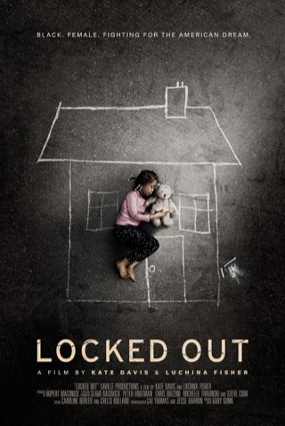

About the film

Nothing symbolizes ‘making it in America’ quite like owning a home. Yet today, the racial gap in home ownership is widening, and those most impacted are women of color. Set in Detroit, “Locked out” takes us into the lives of courageous Black women who face evictions, predatory lenders and traditional banking, in a movement to battle housing injustice, so The American Dream may become a reality for all.
At the festival
- 2023 Opening Night · DC Premiere · Thursday, November 2, 2023 · 7:00 PM · Martin Luther King, Jr. Memorial LibraryPost-screening talkback with co-director Luchina Fisher, moderated by Tracy Jan of The Washington Post.
Sessions about this film
- 2023 · Thu Nov 2 · 9:15pmPanelLocked Out: Post Screening Reception
More films on these topics
 A Month in MinnesotaAnnie Sundberg2026 · 40 min
A Month in MinnesotaAnnie Sundberg2026 · 40 min- An Unknown SubstanceSteven Leckart · Maia Wikler2026 · 39 min
 Free Joan LittleYoruba Richen2026 · 36 min
Free Joan LittleYoruba Richen2026 · 36 min My NDAJuliane Dressner, Miriam Shor2026 · 101 min
My NDAJuliane Dressner, Miriam Shor2026 · 101 min- Short Strand: Against the GrainSteven Leckart · Maia Wikler2026
- Short Strand: Minneapolis: On the Record + A Special ScreeningLaura Poitras, Rachel Lauren Mueller · Anne Sundberg · Yoruba Richen, Christalyn Hampton2026